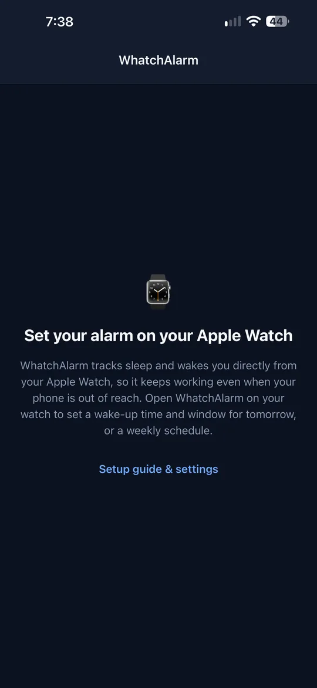

WhatchAlarm · Guía de uso
Configuración y guía de uso
WhatchAlarm es una alarma inteligente que funciona en tu Apple Watch. Tú eliges la hora más tarde a la que puedes levantarte y una ventana antes de ella. Dentro de esa ventana, el reloj busca un momento de sueño más ligero —cuando ya te estás moviendo— y te despierta entonces. Si no lo encuentra, te despierta exactamente a la hora que elegiste.
La app del iPhone es la guía de configuración y el lugar donde se compra. La alarma vive por completo en el reloj: tu iPhone puede estar en otra habitación o apagado.
Las capturas muestran la versión en inglés de la app; en el texto, los botones aparecen con su nombre en español.
Qué necesitas
- Apple Watch con watchOS 10 o posterior
- iPhone con iOS 17 o posterior, enlazado con el reloj
- Unos cinco minutos para la configuración de abajo
Hazla una sola vez, por la tarde, antes de tu primera noche.
Configuración en cinco pasos
Los pasos 1, 3 y 4 son en el iPhone; el paso 2, en el reloj. Cada uno se hace una sola vez.
Instala la app en el reloj
iOS no siempre instala solo las apps del reloj. En tu iPhone:
- App Watch
- Mi reloj
- General
- desplázate hacia abajo
- Apps disponibles
- WhatchAlarm
- Instalar
Consejo: si en esa misma pantalla General activas Instalación automática de apps, las próximas apps del reloj se instalarán solas.

Permite el acceso en el reloj
Abre WhatchAlarm en tu Apple Watch. La primera vez te pide tres permisos; acéptalos los tres:
Estas solicitudes aparecen en el reloj, no en el iPhone, porque la alarma funciona en el reloj. Sin ellas te despertará igualmente a tu hora, pero no podrá buscar un momento más ligero.
Deja pasar WhatchAlarm en el modo Sueño
Este paso es importante: sin él, el modo de concentración Sueño puede retener tu alarma. En tu iPhone:
- Ajustes
- Concentración
- Sueño
- Apps
- en Permitir notificaciones
- añade WhatchAlarm


Activa el registro del sueño
Así el reloj mide el pulso con más frecuencia durante la noche. En tu iPhone:
- App Watch
- Mi reloj
- Apps
- Sueño
- Registrar sueño con el Apple Watch
La fila Apps está cerca del final de la lista Mi reloj. Si ya ves tus datos en la app Sueño del reloj, está activado y no hace falta nada más.

Duerme con el reloj puesto
Durante la noche el reloj capta tu movimiento y tu pulso, las señales con las que WhatchAlarm distingue el sueño ligero del profundo. Asegúrate de que esté cargado antes de dormir.
Poner una alarma
Para una mañana


- Abre WhatchAlarm en el reloj y gira la Digital Crown para elegir tu hora límite para despertar.
- Toca Ventana para elegir cuánto antes puede despertarte: 10, 15, 20 o 30 minutos. 20 minutos es un buen comienzo.
- Sonido: déjalo activado si quieres sonido al final (consulta Cómo te despierta).
- Toca Iniciar. La pantalla muestra Alarma puesta, el día, la hora y la ventana.
Para cancelarla antes de que suene:
- Gestionar
- Detener alarma
Cada semana: un horario
En el reloj, toca Horario en la parte inferior de la pantalla principal. Activa los días que quieras, cada uno con su propia hora. En un día laborable, Usar para Lun–Vie copia esa hora a los cinco días laborables.
Una alarma programada suena sola esos días. Para saltarte una sola mañana, abre WhatchAlarm cuando esa alarma esté puesta y toca Gestionar → Saltar esta alarma; el horario sigue activo.
La parte inteligente necesita un toque al día
Apple solo deja que una app del reloj prepare su sesión nocturna mientras la app está abierta en pantalla, y como mucho con un día y medio de antelación. Por eso:
- La alarma en sí siempre suena: está programada con días de antelación.
- La parte inteligente (buscar un momento más ligero) se activa cada vez que abres WhatchAlarm dentro del día anterior a la alarma. Detener la alarma de la mañana en el reloj también cuenta, así que casi ningún día tendrás que hacer nada.
- Si se escapa algún día, un recordatorio nocturno te pide que lo toques. Al tocarlo se abre la app, y con eso basta. Elige una hora en la que el reloj esté en tu muñeca y no en el cargador:
- Ajustes
- Recordatorio nocturno
Cómo te despierta
Suave cuando se puede, firme cuando hace falta. Lo que recibes depende de si el reloj encontró un momento más ligero.
Momento ligero encontrado
Despertar temprano: con suavidad
Ya estás a punto de despertar, así que empieza con toques en la muñeca que aumentan durante tres minutos. ¿Sigues dormido? La vibración sube a la intensidad que elegiste en Ajustes → Intensidad al despertar (Suave, Normal o Fuerte). Sin sonido en esta fase.
Si cuando llega tu hora todavía no la has detenido, pasa al despertar con toda la fuerza.
Llegó tu hora
Hora límite: toda la fuerza
Sin preámbulos: se acabó el tiempo. La vibración más fuerte del reloj, sin pausas, desde el primer segundo. Dos minutos después se suma el sonido, y sigue hasta que la detengas.
Cuando empieza directamente con sonido
El reloj solo puede vibrar para WhatchAlarm mientras está en marcha la sesión nocturna de la app, y Apple la limita a unos 30 minutos. Con una ventana de 30 minutos, toda la sesión se dedica a buscar sueño ligero y termina justo a tu hora; a partir de ahí la app solo puede despertarte con notificaciones, y por eso el sonido empieza enseguida. Lo mismo ocurre si no has abierto WhatchAlarm en el reloj dentro del día anterior a la alarma: entonces no hay sesión nocturna.
Si quieres que primero vibre, deja la ventana en 20 minutos o menos.
Sonido y modo silencio
Para que haya sonido hacen falta dos cosas: Sonido activado en WhatchAlarm y el reloj fuera del modo silencio (la campana del Centro de control del reloj). En modo silencio, el Apple Watch no deja sonar a ninguna app —ni siquiera a la alarma de Apple—, así que WhatchAlarm te despierta solo con vibración.
Cómo detenerla
Toca Detener por hoy en WhatchAlarm o toca la notificación de la alarma. Solo se detiene la alarma de esta mañana: tu horario para los demás días sigue activo.
Tu próxima alarma en la esfera
Añade la complicación de WhatchAlarm para ver tu próxima alarma de un vistazo. Mantén pulsada la esfera y luego:
- Editar
- elige un hueco
- WhatchAlarm
- Próxima alarma
Muestra la hora y el día de tu próxima alarma. Si no hay ninguna, muestra No. En los huecos más grandes indica también si la parte inteligente está activa; Toca para activar significa que todavía no: un toque abre WhatchAlarm y la activa.


Ajustes en el reloj
- WhatchAlarm
- Ajustes
- Formato de hora
- Automático, 12 horas o 24 horas.
- Intensidad al despertar
- Con qué firmeza sigue un despertar temprano después de los primeros toques: Suave, Normal o Fuerte. A tu hora siempre despierta con toda la fuerza.
- Recordatorio nocturno
- Activado o no, y su hora.
- Diagnóstico
- Un registro de lo que hizo la alarma y por qué. Se queda en el reloj a menos que toques Enviar registro; útil si nos escribes por algún problema.
Historial, en la pantalla principal, muestra tus dos últimas semanas: cuándo te despertó y si fue antes (por movimiento o pulso) o a tu hora.
Prueba gratuita y compra
WhatchAlarm es gratis durante 60 días, con todo incluido. Después, una única compra la desbloquea para siempre: no es una suscripción, nada se renueva.
Puedes comprarla cuando quieras en la app del iPhone:
- Guía de configuración y ajustes
- Compra
¿Ya la compraste, en un teléfono nuevo o tras reinstalarla? Toca ¿Ya la compraste? Restaurar compra. Siempre te dice el resultado:
- Compra restaurada — la app está desbloqueada.
- No se encontró ninguna compra — la cuenta del App Store de este iPhone no ha comprado WhatchAlarm. Inicia sesión con el Apple ID con el que la compraste (Ajustes → tu nombre → Contenido y compras) y vuelve a intentarlo.
- No se pudo restaurar — el App Store no respondió. Comprueba tu conexión y vuelve a intentarlo.

¿La alarma no te despierta?
Revisa esto por orden.
- WhatchAlarm está permitida en Ajustes → Concentración → Sueño → Apps (paso 3).
- El reloj estaba en tu muñeca y cargado.
- La alarma estaba puesta (Iniciar) o programada en el reloj.
- El acceso se permitió en el propio reloj (paso 2).
- ¿Sin sonido? Seguramente el reloj está en modo silencio; es lo esperado: te despierta con vibración.
Privacidad
WhatchAlarm no tiene cuenta, ni servidores, ni analítica, ni anuncios. Tu pulso y tu movimiento se leen en el reloj, se usan en el reloj y nunca salen de él.
Política completa: Política de privacidad. Preguntas: contact@nghive.app